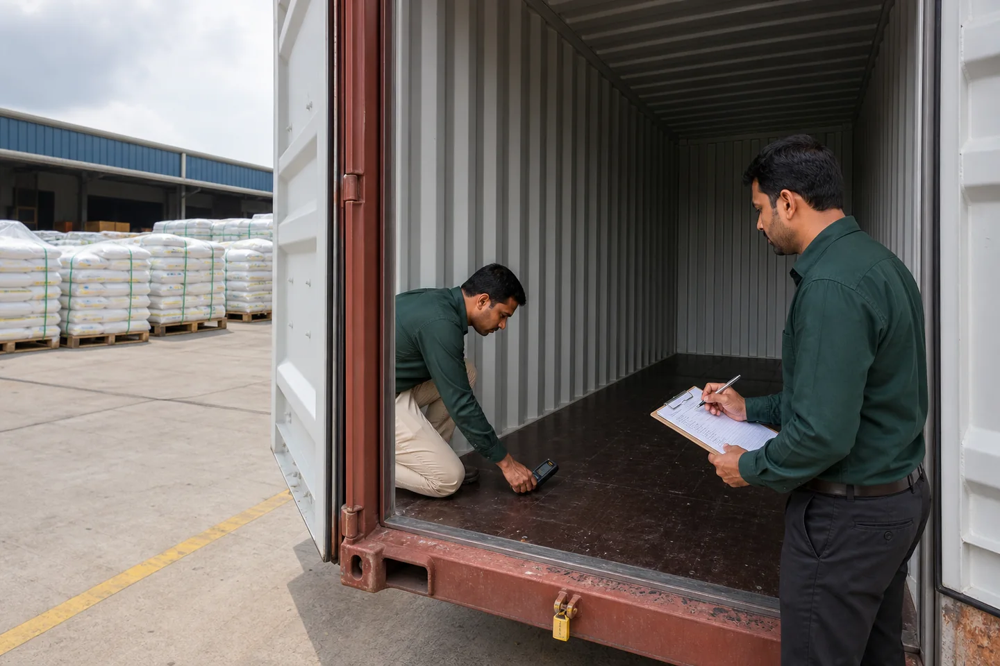
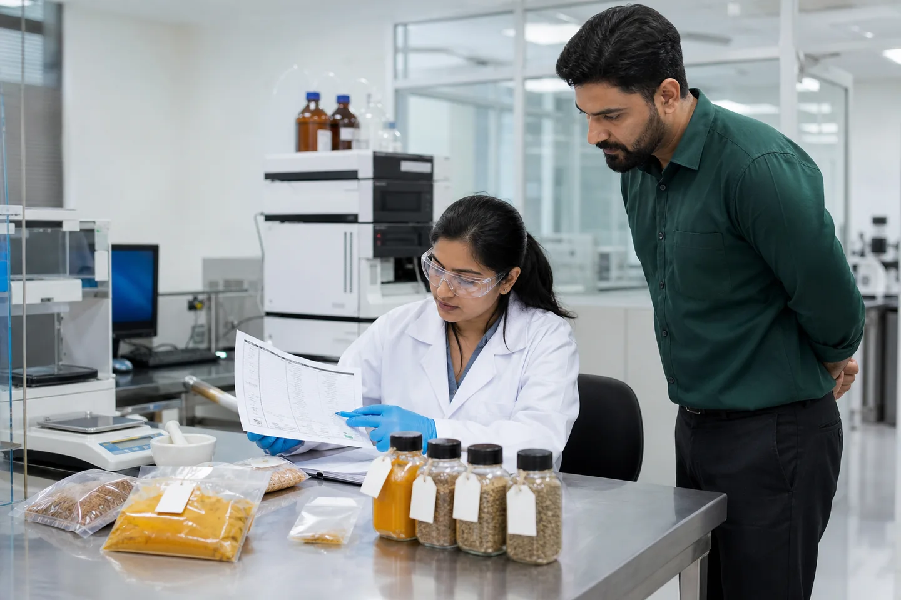
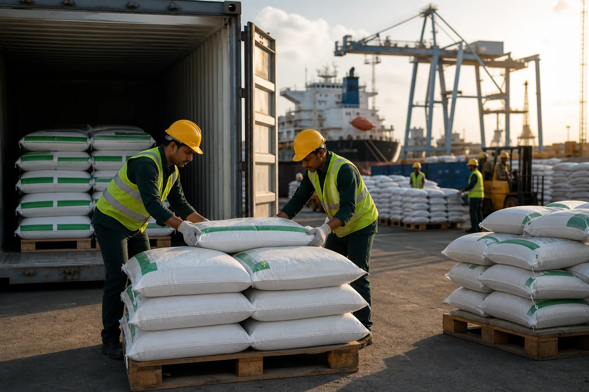
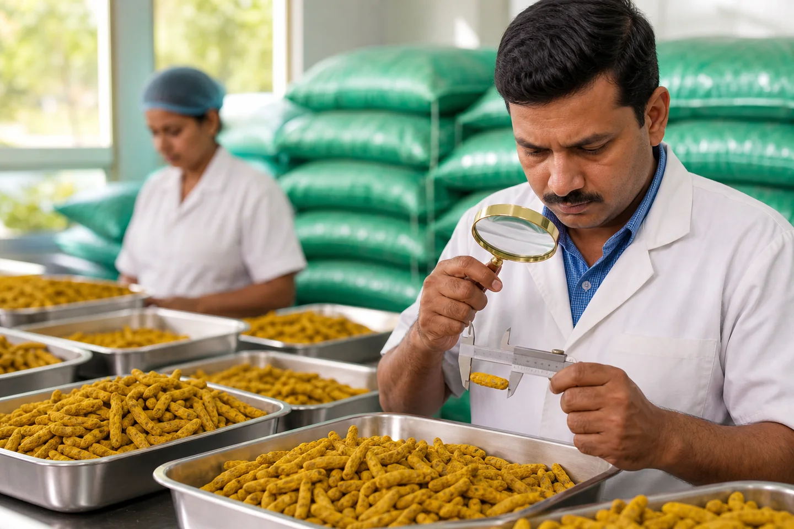
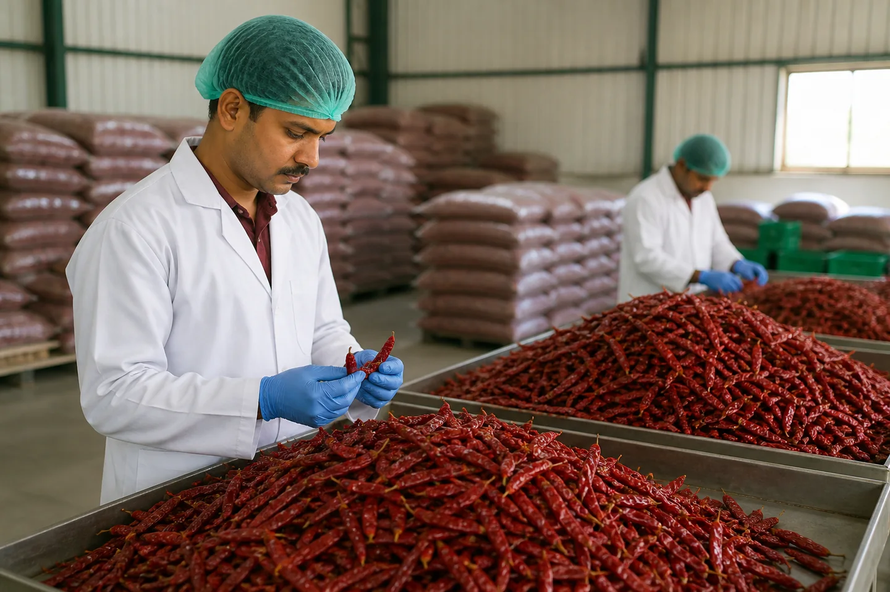
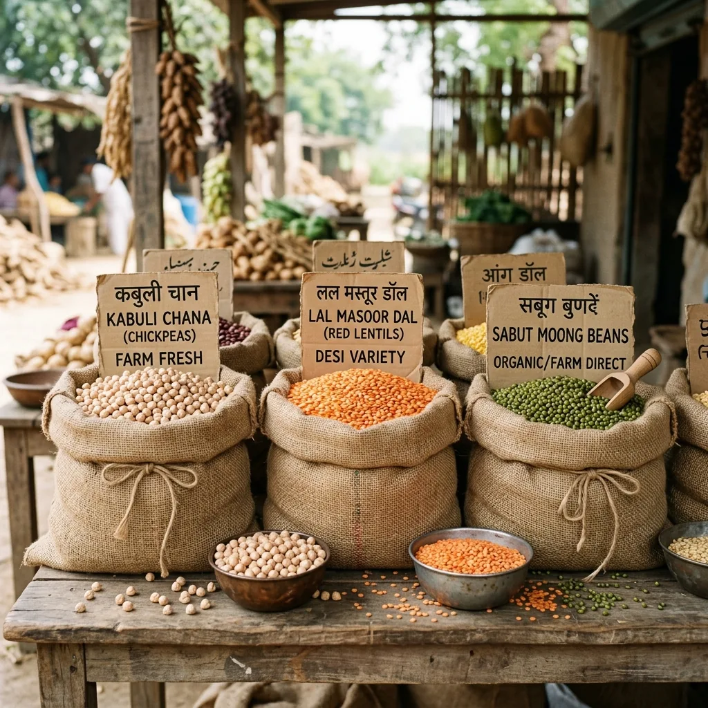

Thông tin thị trường &
Thông tin chi tiết về thương mại
Hướng dẫn chuyên sâu, phân tích thị trường và cập nhật quy định dành cho người mua quốc tế đối với hàng nông sản Ấn Độ — do nhóm xuất khẩu của JFT Agro viết.

Gạo Basmati 1121 và 1509: Bạn nên nhập khẩu loại gạo nào vào năm 2026?
Hai giống thống trị xuất khẩu Basmati của Ấn Độ trên toàn cầu. Cả hai đều là loại hạt dài, thơm và cao cấp - nhưng chúng phục vụ các thị trường khác nhau, những người mua khác nhau và các mức giá khác nhau. Đây là những điều bạn cần biết trước khi đặt hàng container.

Danh sách kiểm tra kiểm tra việc xếp hàng vào thùng chứa thực phẩm dành cho nhà nhập khẩu nông sản
Danh sách kiểm tra container xếp hàng trước đối với gạo, gia vị, đậu và ngũ cốc bao gồm độ sạch, độ khô, mùi, sâu bệnh, bao bì, hồ sơ tải hàng, niêm phong và VGM.

Cách xem lại Giấy chứng nhận phân tích thực phẩm nhập khẩu
Tìm hiểu cách xem xét Giấy chứng nhận Phân tích thực phẩm: nhận dạng lô, lấy mẫu, phương pháp, đơn vị, giới hạn, phạm vi phòng thí nghiệm và các biện pháp kiểm soát ngoài đặc điểm kỹ thuật.

Làm thế nào để viết một đặc điểm kỹ thuật mua hàng nông sản
Mẫu người mua thực tế đối với gạo, gia vị, đậu và ngũ cốc bao gồm cấp độ, dung sai, kiểm tra, đóng gói, lấy mẫu, tài liệu và quy tắc chấp nhận.

Cách xuất khẩu hàng hóa từ Ấn Độ sang châu Phi: Hướng dẫn đầy đủ về chứng từ, điều khoản thanh toán & mẫu miễn phí
Hướng dẫn xuất khẩu từng bước từ Ấn Độ sang Châu Phi — tất cả các tài liệu bắt buộc, điều khoản thanh toán, yêu cầu cụ thể theo quốc gia đối với Nigeria, Kenya, Ghana, Tanzania và các mẫu Hóa đơn Proforma, Hóa đơn thương mại và Danh sách đóng gói có thể tải xuống miễn phí...

Xuất khẩu nghệ ngón tay của Ấn Độ 2026: Salem vs Nizamabad, Phân loại & Giá cả
Ấn Độ trồng 75% lượng nghệ của thế giới. Cấp độ Salem so với Nizamabad, thông số kỹ thuật về chất curcumin và điểm chuẩn FOB năm 2026...

Xuất khẩu ớt đỏ Ấn Độ 2026: Teja S17, hạng Guntur & giá FOB
Teja S17 vs Guntur Sannam vs Bydagi – loại nào dành cho thị trường của bạn? Các đơn vị Scoville, thử nghiệm màu ASTA và thuốc nhuộm Sudan...

Đậu xanh xuất khẩu Ấn Độ 2026: Phân loại, kích cỡ và hướng dẫn người mua
Lớp nảy mầm đậm so với lớp nấu nhỏ. Kiểm tra tỷ lệ nảy mầm, giá FOB 2026, thị trường Trung Quốc, Hàn Quốc...

Gạo đồ IR-64 xuất khẩu: Phân loại, thị trường & giá FOB 2026
IR-64 bị hỏng 5% so với 25% - điều mà người mua ở Tây Phi, vùng Vịnh và Đông Nam Á thực sự mong muốn. Tiêu chuẩn xay xát và tiêu chuẩn FOB 2026...

Cách nhập khẩu gạo Ấn Độ sang Nigeria và Tây Phi: Hướng dẫn đầy đủ
Yêu cầu Mẫu M, đăng ký NAFDAC, kiểm tra SGS, trung tâm tái xuất Cotonou - hướng dẫn nhập khẩu Nigeria/Tây Phi đầy đủ...

Xuất khẩu gạo Ấn Độ sang Sri Lanka và Bangladesh: Điều kiện & Hậu cần
Lợi thế về tuyến đường biển ngắn (3–6 ngày), chủng loại được ưa chuộng theo quốc gia, phê duyệt BSTI và hướng dẫn điều khoản thanh toán...
Nhập khẩu nông sản Ấn Độ vào Kenya và Đông Phi: Nhiệm vụ & Tài liệu
Thuế gạo EAC 75%, chứng chỉ KEBS PVoC, thời gian dừng cảng Mombasa và tính toán chi phí cập bến...

Cách đọc Hóa đơn Proforma Xuất khẩu của Ấn Độ: Hướng dẫn đầy đủ
Mỗi phần của PI đều được giải thích - mô tả sản phẩm, mã HS, cờ đỏ chi tiết ngân hàng và sự khác biệt giữa PI so với Hóa đơn thương mại...
Thuế nhập khẩu gạo Ấn Độ 2026: Hướng dẫn thuế quan theo từng quốc gia
Thuế suất dành cho Các Tiểu vương quốc Ả Rập Thống nhất (0% CEPA), Vương quốc Anh (0% DCTS), Kenya (75%), Nigeria (110%), EU, Bangladesh — với ví dụ tính toán chi phí đất đai...

Giải thích về đăng ký APEDA: Ý nghĩa của nó đối với các nhà nhập khẩu
APEDA RCMC vs IEC, cách xác minh trực tuyến, chứng chỉ BREAC cho basmati và tại sao không có APEDA = không thể xuất khẩu gạo từ Ấn Độ...
Kiểm tra bên thứ ba của SGS đối với hàng xuất khẩu nông sản của Ấn Độ: Cách thức hoạt động
SGS kiểm tra những gì khi xếp hàng, những gì không bao gồm, cách hướng dẫn trong hợp đồng của bạn và cách đọc giấy chứng nhận...

Thư tín dụng nhập khẩu thực phẩm Ấn Độ: Hướng dẫn từng bước
Quy trình LC 8 bước, tầm nhìn so với cách sử dụng so với LC đã được xác nhận, những khác biệt phổ biến nhất trong giao dịch LC nông nghiệp và các mẹo soạn thảo chính...

Giải thích vận đơn: Hướng dẫn dành cho nhà nhập khẩu lần đầu từ Ấn Độ
Ba chức năng của BL, bản gốc và bản phát hành telex, BL sạch và có điều khoản và cách sử dụng nó để thông quan...

Gạo Ấn Độ và Thái Lan 2026: Loại nào tốt hơn cho thị trường của bạn?
So sánh về chủng loại, chênh lệch giá năm 2026 ($50–80/tấn), sự khác biệt về chất lượng và nguồn gốc nào phù hợp với thị trường đích nào...

10 mặt hàng nông sản hàng đầu của Ấn Độ cần nhập khẩu vào năm 2026
Từ basmati và psyllium đến moringa và toor dal — 10 mặt hàng có lợi thế về giá tốt nhất, nhu cầu tăng trưởng và nguồn cung ứng dễ dàng...

Cách chọn nhà xuất khẩu nông sản Ấn Độ đáng tin cậy: Danh sách kiểm tra của người mua
Xác minh trực tuyến IEC, APEDA, GSTIN, MCA — cùng với 6 cờ đỏ báo hiệu nhà cung cấp có rủi ro cao trước khi bạn thanh toán bất kỳ khoản nào...

Xuất khẩu vỏ trấu Psyllium từ Ấn Độ 2026: Phân loại, giá cả và hướng dẫn người mua
Ấn Độ kiểm soát 85% nguồn cung mã đề toàn cầu. Hướng dẫn này bao gồm mọi loại từ 85% đến 99%, tiêu chuẩn giá FOB 2026, thông số kỹ thuật chính và cách tìm nguồn hàng trực tiếp từ một nhà xuất khẩu Ấn Độ đã được xác minh...

Triển vọng giá hạt thì là Ấn Độ (Jeera) năm 2026: Những điều nhà nhập khẩu cần biết
Giá thì là đã tăng từ 20.000 Rs lên 65.000 Rs/tạ trong khoảng thời gian từ năm 2021 đến năm 2023 - và sau đó lại giảm xuống. Phân tích này bao gồm triển vọng giá năm 2026, so sánh cấp độ, điểm chuẩn FOB và thời điểm ký hợp đồng...

Thương mại Gia vị Toàn cầu: Triển vọng Thị trường Nghệ năm 2026
Khi nhu cầu của châu Âu đối với nghệ Ấn Độ giàu chất curcumin tăng cao, các nhà nhập khẩu đang phải đối mặt với chuỗi cung ứng bị thắt chặt. Đây là của chúng tôi...
Duyệt theo chủ đề
Nhận Định giá trực tiếp tại nhà máy
từ Ngôi sao Xuất khẩu của Ấn Độ
Trade samples on request. Proforma Invoice Timing is confirmed after commercial review. APEDA documentation available for verification. ISO 9001:2015 documentation available for verification.